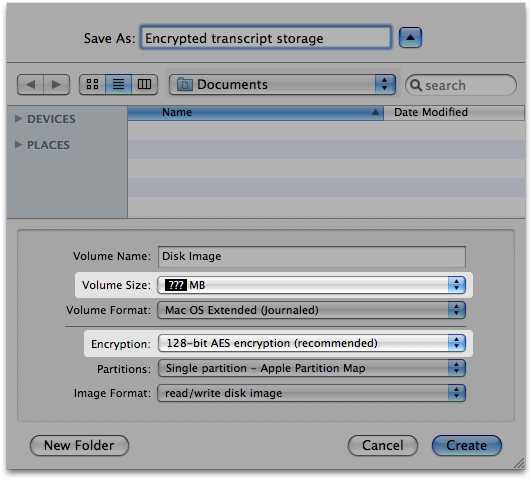

Password-protecting Adium
I have friends and family who use Adium on the same machine I use. How do I keep them from seeing my contacts and transcripts, or worse, chatting with my friends?
Adium doesn't provide a facility to password-protect your accounts (other than the account password that every service requires) or your transcripts.
Our opinion is that it would be duplicated effort. Mac OS X allows you to set up multiple password-protected user accounts. Our recommendation is that you should use this feature. Similarly, if you want the transcripts to be encrypted, we recommend using Mac OS X's built-in FileVault feature, which encrypts everything in your Home folder.
Adium does let you require you to enter your account password to log into your account; simply don't enter it into the AccountEditor, and don't check the “Save password” checkbox in the password prompt. Of course, if you have multiple accounts, this will become something of a hassle.
Steps to protect your transcripts (and everything else in your Home folder)
Use Mac OS X's own login system
Set up a Mac OS X account for every person who uses Adium on your system. Then, your settings (accounts, contacts, transcripts, AdiumXtras, preferences) will be totally separate from theirs—they won't even be in the same folder.
Set a Mac OS X login password
You only need to do this if you don't already have a Mac OS X login password set.
- Open the Accounts pane of System Preferences.
- Click “Change Password”.
- Enter your desired password in the “New Password” field, then again in the Verify field. Alternatively, click the button with a key icon to have Mac OS X generate your password. Either way, be sure to remember your new password, or write it down and store it in a safe place (not on, under, behind, or near your computer).
- Optionally, enter a hint to your password. Mac OS X will present this clue after three incorrect attempts, in case you forget your password. For that reason, it should be a clue that you would understand and an attacker wouldn't. (For the same reason, don't simply put your password in this field, or you will show your password to an attacker after three incorrect attempts.)
Require a login password to use Mac OS X
- Open the Accounts pane of System Preferences.
- Click on the padlock icon in the lower-left corner of the window. Enter the username and password of an administrator account on the system.
- Uncheck the “Automatically log in as:” checkbox (also known as the “Make my system insecure” checkbox).
- For added security, switch the “Display login window as:” setting from “List of users” to “Name and password”. This will require you to type in both your username and your password, rather than pick the username from a list. In a sense, this turns your username into a second, weak password, since anybody attempting to login must already know a username rather than be able to pick it from the list.
- From the View menu, choose the Security pane.
- Check the “Require password to wake this computer from sleep or screen saver” box.
Afterward, whenever you leave your computer, you can put it to sleep (easy to do on laptops: just close the lid) or turn on the screen saver.
Enable the easy way to activate the screen saver (desktops only)
You can do this on a laptop as well, but on those machines, it's easier to just close the lid.
- Launch Keychain Access (in /Applications/Utilities).
- Choose Preferences from the Keychain Access menu.
- Check the “Show Status in Menu Bar” box.
Afterward, you can activate the screen saver by choosing “Lock Screen” from the Keychain Menu Extra (which is a black padlock in the menu bar).
Turn on FileVault encryption
Apple's Knowledge Base has instructions for turning on FileVault.
I'm not on a shared computer, but I need to encrypt my transcripts for another reason and can't use FileVault (e.g., PortableAdium). What do I do?
In this case, you can set up an encrypted disk image and an alias directing Adium to it.
- Quit Adium.
- Find your Logs folder. It's this folder: (Your Home folder)/Library/Application Support/Adium 2.0/Users/Default/Logs.
- Get Info on it, to find out how large it is.
- Use Disk Utility to create an encrypted disk image at least twice that size.
- Copy your Logs folder to the encrypted disk image.
- Move the original Logs folder from the Default folder to the Trash.
- Choose “Secure Empty Trash” from the Finder menu. (This obliterates the contents of the unencrypted files, so that nobody—not even you—can recover them later.)
- Hold down ⌘ and Option, and drag the Logs folder back to where you copied it from. This creates the alias pointing from the alias's location (in the Default folder) to the real Logs folder's location (on the disk image).

When you launch Adium and start a chat, it will mount the disk image automatically. You should regularly make backups of both the disk image file and your keychain.
Wouldn't it be easier to let my partner/relatives/friend to use Adium in my OS X user account?
No, it is more complicated.
Compare:
The all-accounts-on-one-Mac-account way
- Have all of everyone's IM accounts in one list.
- Turn off “Remember password” on every account so that nobody can, accidentally or intentionally, log in as someone else.
And when someone else sits down at the computer, they'll need to:
- Disconnect from all accounts.
- Open up the accounts list.
- Turn on every one of their accounts.
- Enter their password for each of their accounts.
- Close Preferences.
They will also have to use the same settings you use for things like the message view style. If they change those settings, they will be changing them for you, too, and you'll probably want to change them back.
The separate Mac accounts way
All your partner/relative/friend will need to do is:
- Click on the user icon/your username in your menubar.
- Choose their own Mac OS X account from the menu.
- Enter the password for their Mac OS X account.
- Launch Adium.
This takes less than half the time of the other way.
Each of you can set Adium in its Preferences to automatically set you as Away or log out (Offline) when you switch to a different account, so you won't need to do that manually before switching accounts.
This is better not only because it's easier and faster, but also because each of you can have your own settings. Each of you can have your own choice of contact list theme, message view style, fonts, emoticon set, desktop picture, etc. Transcripts and other data are also stored separately for each user (in each user's Home folder).